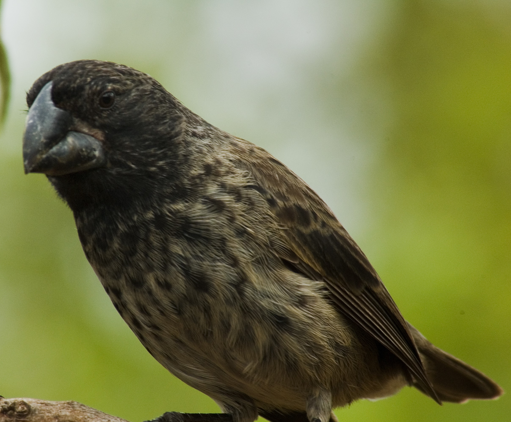
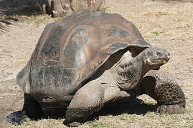
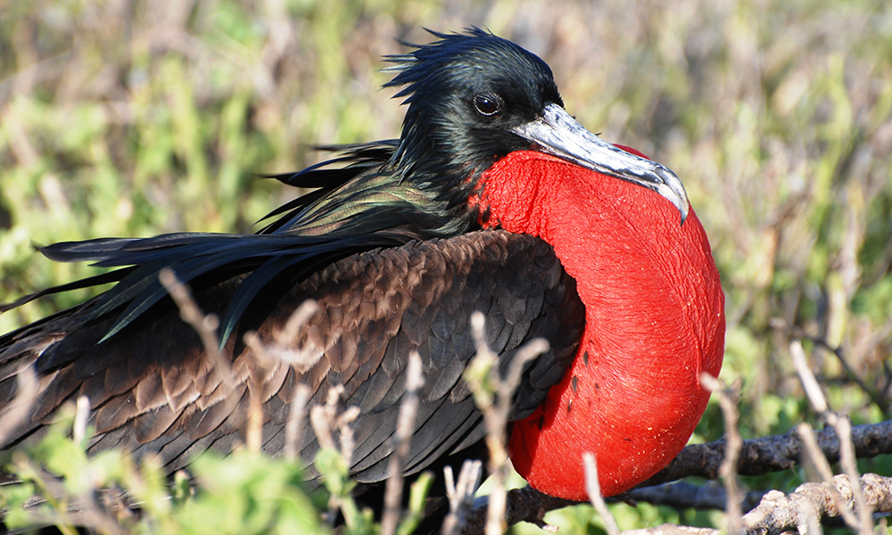

นกบูบีเท้าแดง
Binomial name: Fregata magnificens
Kingdom: Animalia
Phylum: Chordata
Class: Aves
Order: Suliformes
Family: Fregatidae
Genus: Fregata
Species: F. magnificens

ชนิดของสัตว์ในเกาะกาลาปากอส

Finch Dawin
นกตัวที่ 1

Grapsus Crapsus
ปูตัวที่ 1

Marine Iguana
อิกัวน่าตัวที่ 1

Galápagos Penguin
เพนกวินตัวที่ 1

Galápagos Tortoise
เต่าตัวที่ 1

Bluebooby
นกตัวที่ 2

Magnificent Frigatebird
นกตัวที่ 3

Red-Footed Booby
นกตัวที่ 4

Flightless Cormorant
นกตัวที่ 5

Galápagos Sea Lion
แมวน้ำตัวที่ 1